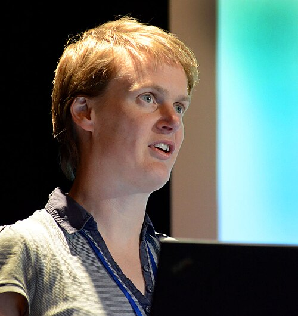
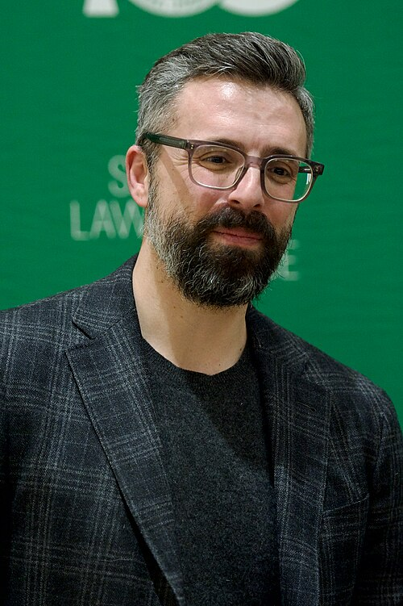

WM
'">Key figures
The cast
Founders, theorists, builders, and financiers of the project.
Founder
William MacAskill
b. 1987Co-founded Effective Altruism and formalized longtermism. Author of “What We Owe the Future”; estimated 10²⁴ future people. Mentored and later defended Sam Bankman-Fried.
Wikipedia →
HGTheorist
Hilary Greaves
b. 1978Oxford philosopher and founding director of the Global Priorities Institute. Co-author with MacAskill of “The Case for Strong Longtermism,” the movement's defining paper.
Wikipedia →
Progenitor
Nick Bostrom
b. 1973Founded the Future of Humanity Institute; wrote “Astronomical Waste” and estimated up to 10⁵⁸ future digital lives. The bridge from transhumanism to existential risk.
Wikipedia →TO
'">Theorist
Toby Ord
b. 1979Co-founded the CEA and Giving What We Can. “The Precipice” put a number on doom — ~1-in-6 this century, 1-in-10 from unaligned AGI.
Wikipedia →NB
'">Strategist
Nick Beckstead
—His thesis argued shaping the far future is overwhelmingly important — and that saving lives in rich countries is worth more because they drive “substantially more” innovation. Ran the FTX Future Fund.
SB
'">Financier
Sam Bankman-Fried
b. 1992EA's biggest longtermist donor via FTX. Radicalized by MacAskill's “earn to give,” he built the FTX Future Fund — then collapsed in one of history's largest frauds.
Wikipedia →
Patron
Elon Musk
b. 1971Called MacAskill's “What We Owe the Future” “a close match for my philosophy.” His drive to make humanity multiplanetary is longtermism in corporate form.
Wikipedia →
EKAmplifier
Ezra Klein
b. 1984Influential journalist who engaged sympathetically with longtermism and blurbed MacAskill's book; co-author of “Abundance,” a politics of techno-optimist growth.
Wikipedia →DT
'">Amplifier
Derek Thompson
b. 1986Journalist and co-author with Klein of “Abundance.” Critics read the book's growth-at-all-costs futurism as longtermism's neoliberal cousin.
Wikipedia →